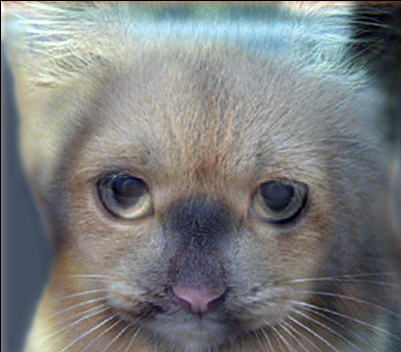
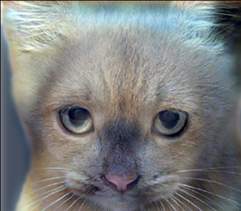
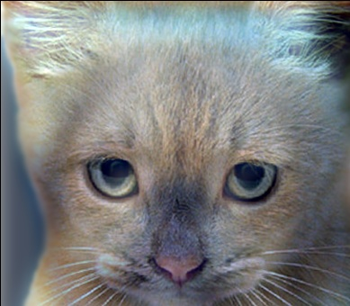
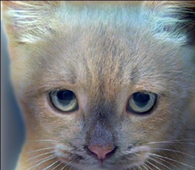
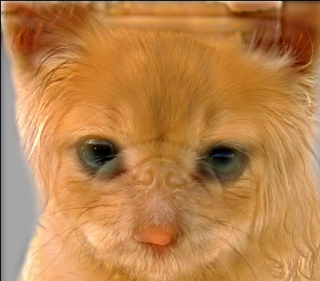
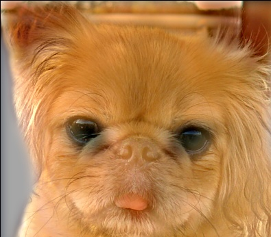
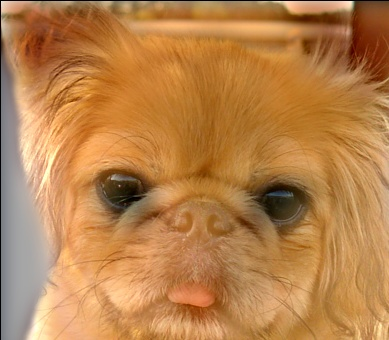
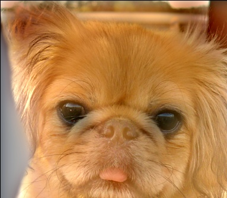

CS 143 / Project 1 / Image Filtering and Hybrid Images

Example of a right floating fish/submarine.
This is the write-up for my implementation of the hybrid image generator. A hybrid image, as you can see on the right, is a mathematical combination of two images. This image is created by combining the low frequencies of one image with the high frequencies of another image, additively. I was able to generate these low and high frequency images using image filters, as we discussed in class.
Image Filtering
Image filtering is a process by which a matrix of values (a "filter") is applied to an image to achieve an affected image as output. The way to apply a filter is to iteratively visit each pixel in the desired output (which starts as an empty image with equivalent dimensions to the input), and calculate the value of the output pixel using the filter. The way to calculate the value at any given pixel using the filter is to take the dot product of the input image centered on the current output pixel, and trimmed to the filter size, and the filter. Once the dot product has been computed, the individual pixel's output value is calculated by summing across both dimensions of the dot product of the filter and subsection of the image.
There are a variety of different image filters that can be applied to an image, producing a variety of outputs. For this project, we primarily used the Gaussian filter. The Gaussian filter is simply a filter with its X and Y values determined by the Gaussian function, such that the strength of the influence on the output pixel is strongest as you approach the center of the image. The filter in this case was generated by the fspecial() matlab function.
Applying A Filter
The process of applying the filter was the majority of the work required for this project, I did this in the imfilter() function. First, I padded the image with black space around its borders, so that the patch filter would be able to calculate values near the edge of the image. After that, I created an empty matrix the same size as the original image, for my output. Next, I iteratively visited each pixel in the output, and at each pixel calculated its new value by taking the dot product of the filter, and the image patch centered on that pixel, then summing the matrix of that calculated dot product.
Iteratively calculating each pixel value
for i=fydist+1:sizeY-fydist
for j=fxdist+1:sizeX-fxdist
for rgb=1:3
tempMatrix=padded(i-fydist:i+fydist,j-fxdist:j+fxdist,rgb) .* filter;
newImage(i,j,rgb)=sum(sum(tempMatrix));
Cats and Dogs
Varied along an increasing cutoff frequency from 5 to 14 by 3's
|     |
|     |
While many image pairs could be created using cutoff frequencies as low as 7, or even 5, when I changed the ordering of the cat and dog image, so that the cat image was the one with the low frequencies, the image became a lot less clear. I found that increasing the cutoff frequency made it much clearer, albeit severely creepier. I think this must be because the cat image is mostly composed of higher frequencies, while the dog image has a greater amount of low frequency images